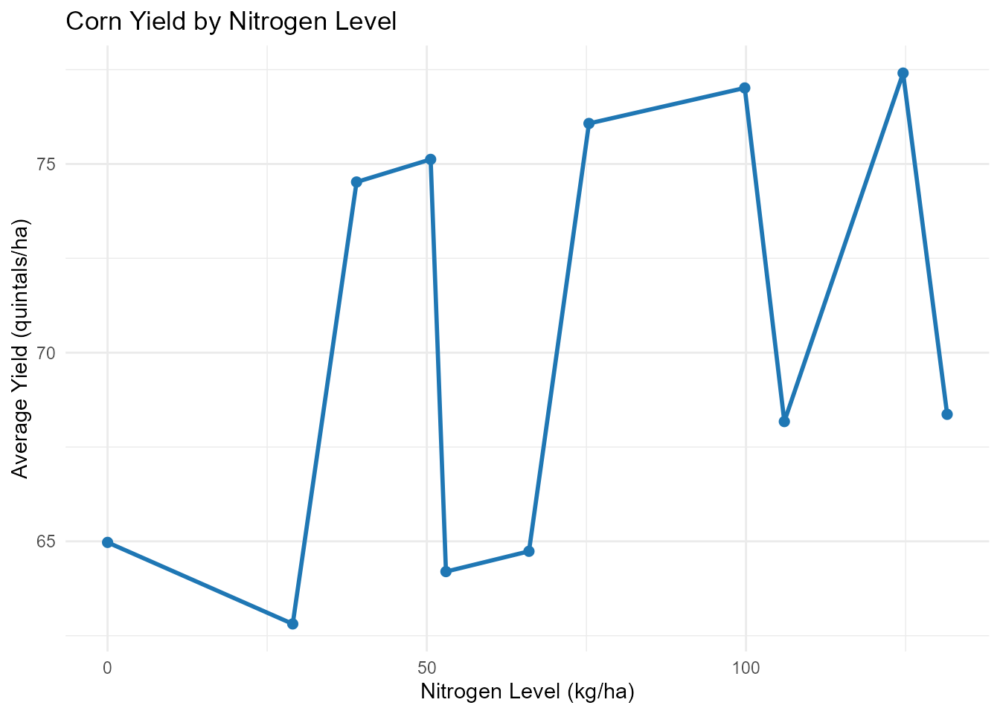

ArgentinAPI: Access Argentinian Data via APIs and Curated Datasets
Source:vignettes/ArgentinAPI_vignette.Rmd
ArgentinAPI_vignette.Rmd
library(ArgentinAPI)
library(dplyr)
#>
#> Attaching package: 'dplyr'
#> The following objects are masked from 'package:stats':
#>
#> filter, lag
#> The following objects are masked from 'package:base':
#>
#> intersect, setdiff, setequal, union
library(ggplot2)Introduction
The ArgentinAPI package provides a comprehensive and
unified interface to access open data about Argentina
from multiple public RESTful APIs, including ArgentinaDatos
API, REST Countries API, and World
Bank API. Through these sources, users can easily retrieve
information on exchange rates, inflation, political figures, national
holidays, economic indicators, and general country-level statistics.
In addition to API-access functions, the package includes a collection of curated datasets covering diverse domains such as economic indicators, biodiversity, agriculture, human rights, genetic data, and consumer prices.
By integrating open APIs with high-quality datasets from multiple
domains, ArgentinAPI supports research, teaching, and
analysis focused on Argentina, making it a versatile
tool for academics, professionals, and policymakers.
Functions for ArgentinAPI
The ArgentinAPI package provides several core functions
to access real-time and structured information about
Argentina from public APIs such as ArgentinaDatos, REST Countries, and the World
Bank API.
Below is a list of the main functions included in the package:
get_argentina_holidays()– Retrieves public holidays in Argentina for a specific year using the ArgentinaDatos API.get_argentine_senators()- Returns the current list of Argentine senators from the ArgentinaDatos API.get_argentine_deputies()– Returns the current list of Argentine deputies from the ArgentinaDatos API.get_country_info_ar()– Retrieves general country-level information about Argentina from the REST Countries APIget_dollar_exchange_rates()– Retrieves the most recent exchange rates for different dollar markets (official, blue, MEP, CCL) from the ArgentinaDatos API.get_presidential_events()– Retrieves a list of official presidential events from the ArgentinaDatos API.get_argentina_child_mortality(): Get Argentina’s Under-5 Mortality Rate data from the World Bank.get_argentina_energy_use(): Get Argentina’s Energy Use (kg of oil equivalent per capita) data from the World Bank.get_argentina_gdp(): Get Argentina’s GDP (current US$) data from the World Bank.get_argentina_hospital_beds(): Get Argentina’s Hospital Beds (per 1,000 people) data from the World Bank.get_argentina_life_expectancy(): Get Argentina’s Life Expectancy at Birth data from the World Bank.get_argentina_population(): Get Argentina’s Total Population data from the World Bank.get_argentina_unemployment(): Get Argentina’s Total Unemployment Rate data from the World Bank.view_datasets_ArgentinAPI()– Lists all curated datasets included in theArgentinAPIpackage across various thematic areas such as economy, biodiversity, genetics, agriculture, and more.
These functions allow users to access high-quality and structured
information on Argentina, which can be combined with
tools like dplyr, tidyr, and
ggplot2 to support a wide range of data analysis and
visualization tasks. In the following sections, you’ll find examples on
how to work with ArgentinAPI in practical scenarios.
List of Argentine Senators
# Display the first 10 Argentine senators
argentine_senators <- head(get_argentine_senators(),n=10)
print(argentine_senators)
#> # A tibble: 10 × 6
#> id nombre provincia partido inicio fin
#> <chr> <chr> <chr> <chr> <date> <date>
#> 1 577 Cora, Stefania Entre Ríos Frente … 2025-02-20 2025-12-09
#> 2 294 Mayans, José Miguel Ángel Formosa Alianza… 2023-12-10 2029-12-09
#> 3 551 Paoltroni, Francisco Manuel Formosa Alianza… 2023-12-10 2029-12-09
#> 4 555 López, María Florencia La Rioja Alianza… 2023-12-10 2029-12-09
#> 5 557 Pagotto, Juan Carlos La Rioja Alianza… 2023-12-10 2029-12-09
#> 6 558 Arce, Carlos Omar Misiones Frente … 2023-12-10 2029-12-09
#> 7 559 Rojas Decut, Sonia Elizabeth Misiones Frente … 2023-12-10 2029-12-09
#> 8 560 Goerling Lara, Enrique Martin Misiones Juntos … 2023-12-10 2029-12-09
#> 9 561 Uñac, Sergio Mauricio San Juan Alianza… 2023-12-10 2029-12-09
#> 10 563 Olivera Lucero, Bruno Antonio San Juan Alianza… 2023-12-10 2029-12-09Argentina’s GDP (Current US$) from World Bank 2022 - 2017
argentina_gdp <- head(get_argentina_gdp())
print(argentina_gdp)
#> # A tibble: 6 × 5
#> indicator country year value value_label
#> <chr> <chr> <int> <dbl> <chr>
#> 1 GDP (current US$) Argentina 2022 632790070063. 632,790,070,063
#> 2 GDP (current US$) Argentina 2021 486564085480. 486,564,085,480
#> 3 GDP (current US$) Argentina 2020 385740508437. 385,740,508,437
#> 4 GDP (current US$) Argentina 2019 447754683615. 447,754,683,615
#> 5 GDP (current US$) Argentina 2018 524819892360. 524,819,892,360
#> 6 GDP (current US$) Argentina 2017 643628393281. 643,628,393,281Argentina’s Life Expectancy at Birth from World Bank 2022 - 2017
argentina_life_expectancy <- head(get_argentina_life_expectancy())
print(argentina_life_expectancy)
#> # A tibble: 6 × 4
#> indicator country year value
#> <chr> <chr> <int> <dbl>
#> 1 Life expectancy at birth, total (years) Argentina 2022 75.8
#> 2 Life expectancy at birth, total (years) Argentina 2021 73.9
#> 3 Life expectancy at birth, total (years) Argentina 2020 75.9
#> 4 Life expectancy at birth, total (years) Argentina 2019 76.8
#> 5 Life expectancy at birth, total (years) Argentina 2018 76.8
#> 6 Life expectancy at birth, total (years) Argentina 2017 76.5Corn Yield Response to Nitrogen Levels
# Summary: average corn yield by nitrogen level
corn_summary <- corn_nitrogen_df %>%
group_by(nitro) %>%
summarise(
mean_yield = mean(yield, na.rm = TRUE),
.groups = "drop"
)
# Plot: nitrogen vs. average corn yield
ggplot(corn_summary, aes(x = nitro, y = mean_yield)) +
geom_line(color = "#1f77b4", size = 1) +
geom_point(size = 2, color = "#1f77b4") +
labs(
title = "Corn Yield by Nitrogen Level",
x = "Nitrogen Level (kg/ha)",
y = "Average Yield (quintals/ha)"
) +
theme_minimal()
Dataset Suffixes
Each dataset in ArgentinAPI is labeled with a suffix to
indicate its structure and type:
_df: A standard data frame.
_tbl_df: A tibble (modern data frame).
_ts: A time series object.
_matrix: A matrix structure.
_list: A list object.
Datasets Included in ArgentinAPI
In addition to API access functions, ArgentinAPI
provides several preloaded datasets offering insights into Argentina’s
economic, agricultural, demographic, and genetic indicators. Here are
some featured examples:
corn_nitrogen_df: Argentina Corn Yield & Nitrogen Data A data frame with yield monitor data from a corn field in Argentina, including variables such as nitrogen application, yield, topography, and block replicates.STRs_argentina_list: STRs Allelic Frequencies from Argentina A list of allelic frequencies for 24 Short Tandem Repeat (STR) genetic markers collected from different populations across Argentina.
Conclusion
The ArgentinAPI package brings together
public RESTful APIs—including ArgentinaDatos, REST Countries, and the World
Bank API—with a collection of curated datasets
covering domains such as economic indicators, biodiversity, agriculture,
human rights, genetic data, and consumer prices.
By integrating these diverse sources, the package enables
comprehensive, reproducible, and high-quality research and
analysis focused on Argentina. Whether the goal is to study
macroeconomic trends, evaluate environmental
and agricultural data, or explore social and genetic
indicators, ArgentinAPI provides a
versatile and reliable toolkit for researchers,
educators, policymakers, and data enthusiasts.